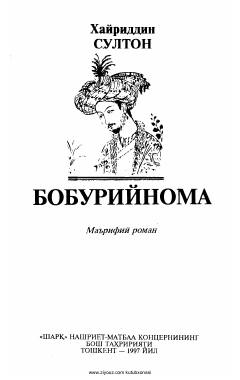

BBuyuk sarkarda va shoir Zahiriddin Muhammad Bobur hayotiga bag'ishlangan tarixiy-ma'rifiy roman.
Ushbu asar buyuk sarkarda va shoir Zahiriddin Muhammad Boburning hayoti va faoliyatiga bag'ishlangan ma'rifiy romandir. Muallif tarixiy faktlar va badiiy to'qimalar uyg'unligida Bobur Mirzoning murakkab taqdiri, shohona hayoti va ijodiy merosini yoritib beradi.